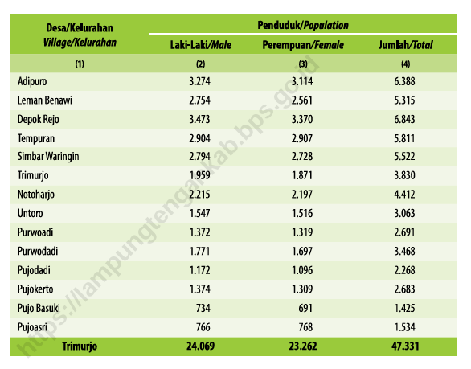
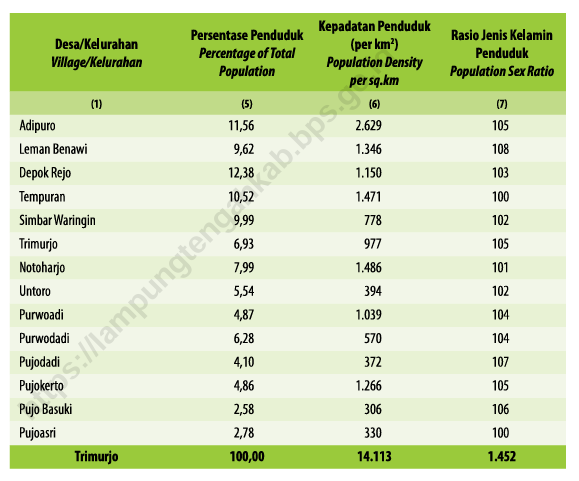

Selamat datang di Kecamatan Trimurjo, bagian dari Kabupaten Lampung Tengah. Kecamatan ini memiliki sejarah kaya sebagai daerah transmigrasi Jawa, menawarkan budaya unik dan potensi alam. Mari jelajahi profil lengkapnya untuk informasi lebih lanjut!.
Kecamatan Trimurjo adalah salah satu dari 28 kecamatan di Kabupaten Lampung Tengah, Provinsi Lampung. Wilayah ini memiliki karakteristik demografis yang khas, didominasi oleh penduduk keturunan transmigran dari Jawa, dengan mayoritas berprofesi sebagai petani. Berikut adalah rincian demografis berdasarkan data dari dokumen dan sumber lainnya:
Berdasarkan data dari dokumen "Kecamatan Trimurjo Dalam Angka 2024", berikut adalah data penduduk Kecamatan Trimurjo pada tahun 2023 (data yang terbaru):


Penjelasan:
Pada tabel di poin "Persentase Penduduk, Kepadatan Penduduk, dan Rasio Jenis Kelamin per Desa/Kelurahan di Kecamatan Trimurjo", dari tabel tersebut dapat disimpulkan rasio keseluruhan jenis kelamin adalah 145 laki-laki per 100 perempuan, dengan komposisi:
Variasi per desa/kelurahan daan interpretasinya:
Data spesifik kelompok umur Kecamatan Trimurjo berdasarkan pola demografis wilayah agraris, memiliki estimasi sebagai berikut.
Berdasarkan sejarah Trimurjo sebagai pusat transmigrasi, berikut estimasi tentang suku penduduk kecamatan Trimurjo:
| Desa/Kelurahan | Masjid | Mushola | Gereja Protestan | Gereja Katolik | Pura |
|---|---|---|---|---|---|
| Adipuro | 10 | 15 | 0 | 0 | 0 |
| Leman Benawi | 7 | 12 | 0 | 0 | 0 |
| Depok Rejo | 8 | 14 | 0 | 0 | 0 |
| Temparan | 6 | 10 | 1 | 1 | 0 |
| Simbar Waringin | 8 | 12 | 0 | 1 | 0 |
| Trimurjo | 5 | 10 | 0 | 0 | 3 |
| Notoharjo | 6 | 11 | 1 | 0 | 0 |
| Untoro | 5 | 9 | 1 | 0 | 0 |
| Purwodi | 4 | 8 | 2 | 0 | 0 |
| Purwodadi | 5 | 10 | 0 | 0 | 0 |
| Pujodadi | 4 | 7 | 0 | 0 | 0 |
| Pujokerts | 4 | 8 | 0 | 0 | 0 |
| Pujo Basuki | 3 | 6 | 0 | 0 | 0 |
| Pujosri | 3 | 6 | 0 | 0 | 1 |
| Total | 79 | 142 | 4 | 3 | 4 |
Berdasarkan tabel tempat ibadah di atas mencerminkan komposisi agama sebagai berikut:
Sistem pendidikan di Kecamatan Trimurjo mencakup Jumlah Sekolah, Jumlah Guru, dan Jumlah Siswa, berikut data ketiganya yang disajikan dalam tabel secara berurutan:
| Jenis Sekolah | Total | Negeri | Swasta |
|---|---|---|---|
| TK | 26 | 1 | 25 |
| SD | 41 | 41 | 0 |
| SMP | 6 | 3 | 3 |
| SMA | 3 | 1 | 2 |
| SMK | 2 | 1 | 1 |
| Jenis Sekolah | Total | Negeri | Swasta |
|---|---|---|---|
| TK | 78 | 13 | 65 |
| SD | 379 | 379 | 0 |
| SMP | 153 | 129 | 24 |
| SMA | 75 | 54 | 21 |
| SMK | 30 | 27 | 3 |
| Jenis Sekolah | Total | Negeri | Swasta |
|---|---|---|---|
| TK | 888 | 78 | 810 |
| SD | 3985 | 3985 | 0 |
| SMP | 1678 | 1505 | 173 |
| SMA | 670 | 570 | 100 |
| SMK | 288 | 266 | 22 |